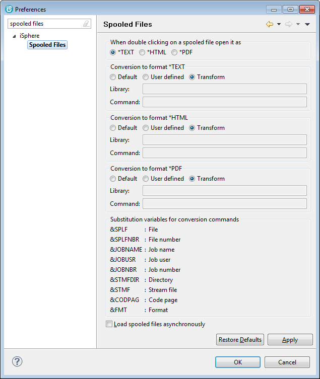

Select Window -> Preferences. Click in the tree view on the left side on the plus symbol prior to iSphere. Click on "Spooled Files".
Here you can specify in which format a spooled file will be opened when you double click on a spooled file in the spooled files subsystem.
You can also integrate your own conversion tools for conversion of spooled files to Text, HTML and PDF. In field "Library" enter the library name which contains the conversion command. In field "command" enter the conversion command. Use the substitution variables for the specific parameters of the command.
